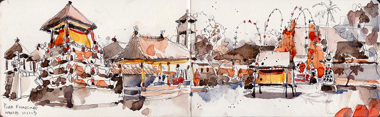

.: Marlie Balhara :.

Our Story ::
We met on the beautiful island of Bali a couple years back. Charlie was visiting a friend who happened to be Mhairi's next door neighbour, just across the paddy fields. And being jetlagged, Charlie was awake when Mhairi’s villamate popped in after a morning jog and invited him to come hang at their place. Being wide eyed and eager for EVERYTHING, Charlie said he would come and chill after he jumped in the shower. So he rocked up, poking his head into the villa to see Mhairi painting her nails first thing in the morning and there was an instant connection. Both drawn to one another but obviously trying to play it cool, we didn’t get a chance to hang out until Charlie’s last day on the island. Mhairi suggested that they go for an early morning surf and decided to take Charlie to Pig Stone, a more remote, isolated break instead of the chilled long boarding wave at Batu Bolong, which is a beginners heaven but extremely crowded. Little did Mhairi know, that Charlie was a liar and did not know how to surf as he got pushed and pulled in multiple directions by the rip tide ….. Deciding that it was probably not cool he die that day, they quickly got out and went to Batu Bolong instead where Charlie was given a rash vest to cover up his blistered sunburnt body. Unfortunately there were only pink ones left that acted more as crop tops rather than rash vests, but in true Charlie style he took it in stride and gave the waves his best. Flopping about on the water like an expired ballerina, it was then that Mhairi knew he was the ONE. Not everyone can pull off that look on the water with such grace, charm and enthusiasm like Charlie does. He left the island the next morning back to LA, and after a couple weeks, Mhairi decided to head over to the West Coast to get her ballerina surf man and the rest is history!
Oh yeah, and Charlie knew Mhairi was the one when she choose the amusement park over a day in the vine yards, wine tasting. The heart wants what it wants.


Villa Address ::
Our villa is not registered on Google maps, so it is easiest to give the address of the villa above as directions --> Red Wood Forest Villa, Jalan Veteran, Tumbak Bayuh. wedding party will stay in Alassari Plantation, while the other guests have the optMountain Retreat, just a 5 minute walk down the road from Alassari Plantation. If this is not suitable, then we can also arrange for a bus to take people back to Canggu at the end of the night, although you might miss the bon fire and marshmallow toasting!

- ~ Balinese Blessing~
- Time : 3.00pm
- Location : River
- Attendance : Bride + Groom
- ~ Precession Rehearsal ~
- Time : 5.00pm
- Location : Grass Foyer
- Attendance : Bridal & Groom Party, Family
- ~ Dinner ~
- Time : 7.00pm
- Location : Pool House
- Attendance : Bridal & Groom Party, Family
- ~ Breakfast ~
- Time : 7.00 - 10.00am
- Location : Restaurant
- Attendance : Bridal & Groom Party, Family
- ~ Flower Arranging ~
- Time : 11.30am
- Location : Grass Foyer
- Attendance: Bridal & Groom Party
- ~ Lunch ~
- Time : Open
- Location : Open
- * Please organise individually
- ~ Hair & Makeup ~
- Time : 12.00pm
- Bride Location : Gatehouse
- Groom Location : Villa Satu
- ~ Ceremony ~
- Time : 3.00pm
- Location : Grass Foyer
- Attendance : Everyone
- ~ Champagne Hour ~
- Time : 4.30pm
- Location : Terrace
- Attendance : Everyone
- ~ Dinner ~
- Time : 6.00pm
- Location : Pool House
- Attendance : Adults
- *Children will be in Villa Satu
- ~ ??? ~
- Time : 8:00pm
- Location : Grass Foyer
- Attendance : Everyone
- ~ Cutting of the Cake ~
- Time : 9.00pm
- Location : Terrace
- Attendance : Everyone
- ~ Tearing up the Dance Floor ~
- Time : 10:00pm
- Location : Restaurant
- Attendance : Absolutely Everyone
- ~ ??? ~
- Time : 1.00am
- Location : ???
- Attendance : Hopefully no Children
- ~ Breakfast ~
- Time : 7.00 - 10.00am
- Location : Restaurant
- Attendance : Alassari Guests
- ~ BBQ ~
- Time : 1.00 - 5.00pm
- Location : Pool
- Attendance : Everyone
- ~ Dinner ~
- Time : Open
- Location : Open
- * Please organise individually
- ~ Gaming ~
- Time : 8.00 - 11.00pm
- Location : Villa Satu
- Mario Kart + Terrible Movies
.: Friday October 5 // Rehearsal Day :.
.: Saturday October 6 // Wedding Day :.
.: Sunday October 7 // Chillaxing :.
Language and Customs ::
- Ada / Is there…? Do you have…? There is… I have…. Use this word to request things. Just stick the name of what you’re after onto it. “Ada kamar?” “Do you have a room?” “Ada.” “I do.”
- Bisa / Is it possible…? Can you…? Can I…? It’s possible…. I can…. You can… Use this when you want to do something, or find out whether someone can do something for you. “Bisa ke Ubud?” “Can you [go] to Ubud?”
- Ya / Yes.Yeah? Also used as an interrogative on the end of questions, like the London “innit?” or “yeah?” or West Coast “y’know?”
- Tidak / No. Not. There are two negatives in Indonesian, but this one is always understood. You can use it to mean “no” or a “not”. “Tidak bisa.” “It’s not possible.” “Habis?” “Have you finished?” “Tidak.” “No.”
- Habis / Finished. There is no more. Have you finished? When being turned away from a petrol station, “Habis” means “We are out of petrol.” At a guesthouse, “habis” means their rooms are full.
- Makan / Food. Eat. Meal. One of the nice things about learning Indonesian is that many words can be used both as nouns and verbs. “Ada makan?” “Do you have food?” Just add times of day to make meals: “Makan pagi” (breakfast) “Makan siang” (lunch) “Makan malam” (dinner).
- Selamat / Safe. Add the times of day to make formal greetings: “Selamat pagi”: “Good morning.” “Selamat siang“: “Good day.” “Selamat malam“: “Good evening”. “Selamat jalan“: “Safe journey!” (Goodbye). You can also use it to ask if, for example, it’s safe to leave your bags somewhere.
- Pagi / Morning. Morning! In the morning. As in “Selamat pagi” (good morning), “makan pagi” (breakfast). “Ada bis ke Ubud?” “Is there a bus to Ubud?” “Pagi.” “In the morning.”
- Siang / Midday, in the middle of the day. “Selamat siang” (good day). “Makan siang” (lunch). (There’s a fourth Indonesian time word, “sore“, which covers the afternoon, but you don’t necessarily need to know that.)
- Malam / Evening, night, in the evening. “Selamat malam“: good evening. “Makan malam“: dinner. “Ada kamar?” “Do you have a room? “Ada! Berapa malam?” “I have one. For how many nights?”
- Kamar / Room. Used when booking hotels, for example. The word for toilet is “kamar kecil” (literally: the little room).
- Orang / Person. People. “Ada kamar?” “Ada. Berapa orang?” “Do you have a room?” “I do. For how many people?” Also as in “orang utan” – “man of the woods”.
- Berapa / How many…? How much…? What number…? In a shop: “Berapa?” “How much?” It’s worth learning your Indonesian numbers, but most Indonesians will write the price down for you on paper or a calculator, or hold up fingers or notes. “Jam berapa?” “What time….?”
- Jam / Hour. Time. “Jam berapa?” “What time is it?” “Berapa jam ke Ubud?” “How many hours to Ubud?”
- Dari / From. “Dari mana?” “Where are you from?”
- Ke / To. “Ke mana?” “Where are you [going] to?”
- Dimana / Where? “Di mana kamar kecil?” “Where is the toilet?” “Ke mana?” “Where are you [going] to? “Ke Kuta.” “I am going to Kuta.”
- Sudah / Already. Finished. Have you yet? In a restaurant: “Sudah?” “Have you finished?” “Sudah.” “I have.” In conversation: “Sudah ke Bali?” “Have you [been] to Bali yet?”
Food and Beverage ::
Indonesian cuisine is very diverse, flavoured with a wide variety of spices, such as ginger, galangal, cloves, star anise, cinnamon, cardamon, lemon grass and lots of chillis. Coconut milk is used in many dishes, combined with fragrant herbs such as kaffir lime leaves. The main staple is rice, which can be seen from all the beautiful paddy fields around Bali, but this is true for the whole of Indonesia. It isn't a meal unless it has rice! Luckily for those who might not be fans of Indonesian food, or want to eat it for every meal of their trip, the island has great options for cuisines from around the world. We've listed some of our favourite places on the island below.
- Veda Healthy
- Shady Shack Vegetarian
- Bali Buda Healthy
- Crate Hipster
- Bumis Indonesian
- Ji Dinner Spot
- Thai & Co Thai + Vietnamese
- Musubi // Japanese
- Nude // Brunch
- Milk and Madu // Brunch
- Ule Kan // Indonesian
- Babi Bagus // Balinese Suckling Pig
- Peloton // Vegan
- Boss Man // Burgers + Fries
- La Luciola // Brunch
- Columbian Place // Columbian
- Japanese Place // Japanese
- Locavore Gastronomy
- Night Rooster // Cocktail Lounge
- Wham! At Mother // Fusion
- Thai Kitchen // Thai Food
.: Canggu :.
.: Berawa :.
.: Seminyak :.
.: Uluwatu :.
.: Ubud :.
Transportation ::
Getting around in Bali is not as intimidating as it may seem. Sure there may be the occasional free for all, where the traffic forms a beehive swarm crossing all lanes and sidewalks. But for the most part there is organised flow amongst the chaos. Most traffic is relatively slow and aware of whats going on. Before you fly we recommend downloading the "Bluebird" and “Go-Jek” app. Bluebird is the main Indonesian taxi provider, while Go-Jek is the Indonesian equivalent to Uber, but really so much more! Through the app you can order motorbike or car transportation, request a masseuse to come directly to your place or even order that cinnamon roll you’re too embarrassed or lazy to buy yourself! Note that if you choose to rent a bike you’re in for the real Bali experience, with the wind in your hair and the smell of essense and spices in your nostrils.
- Charge per ride
- Order through app
- Charge per ride
- Order through app
- 5 USD per day
- Available through villas
- 25 USD per day
- Bali Car Rental Canggu // +62 813 3795 7660
- 50 USD per day
- Honest Drivers Bali // +62 813 3848 8188
- Nyoman // +62 812-3945-386 Nyoman
- Agung // +62 877-6129-9434 Agung
.: Go-Jek :.
.: Bluebird :.
.: Motorbike :.
.: Car :.
.: Car + Driver :.
Wifi & Sonos ::
Sunblock, sunblock, sunblock. To be honest, everything you need can be purchased on the island. The island is well equipped to supply visitors with all there needs, although some things can be a little trickier to get or the prices are insanely marked up! Please check out the gift section, as one of the items that we would like you to bring is mentioned there. Other than that we have provided a short list of things you might need below.
- Sunblock
- Swimmers
- Mosquito Spray
- Cocktail Dress
- Gym Clothes
- Trail Shoes
- Organic Formula
- Organic Diapers
.: Beach Time :.
.: Night Time :.
.: Adventuring :.
.: Baby Ready :.
Activities ::
.: Canggu :.
- Surfing //
- Ocean Temples //
- Pampering //
- Sunbathing //
- Eating //
- Shopping //
- Eating //
- Bars //
- Surfing //
- Boat Trips //
- Sunbathing //
- Cultural Shows //
- River Rafting //
- Monkey Forest //
- Rice Paddies //
- Hashing //
- Volcano Trekking //
- Waterfalls //
- Abandoned Sites //
- Diving + Snorkeling //
- Fish Market //
- Fabric Shopping //
.: Seminyak :.
.: Uluwatu :.
.: Ubud :.
.: Misc :.
Staff ::
We are truly blessed with having all of the things our hearts desire, and really we are trying to reduce the amount of physical things we own! Having all of you attend is already more than enough, and we would like to kindly ask our guests to bring a bottle of either bourbon or gin to the wedding so we can mix up some delicious cocktails for everyone. To try and keep the balance, it would be great if the ladies could bring a bottle of Hendricks gin and the fellas a bottle of Bulleit bourbon. Other than that a small contribution towards our honeymoon pot would be lovely, as this is helping us create a magical experience in celebration of our marriage. We are planning a trip to Antartica, the last continent we both have yet to explore. You can help us purchase our boat tickets to sail off into the sunset from Argentina to Antartica!!!